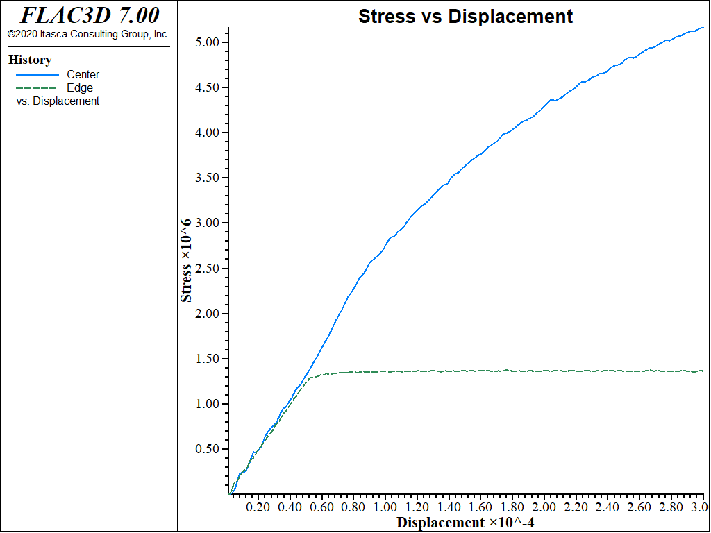
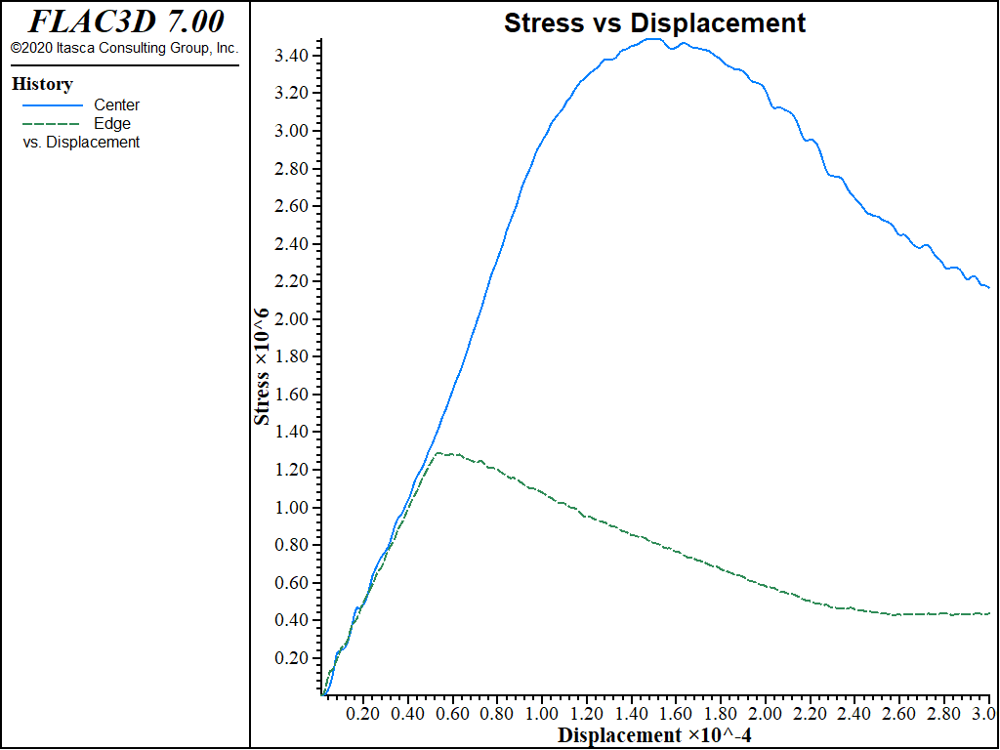
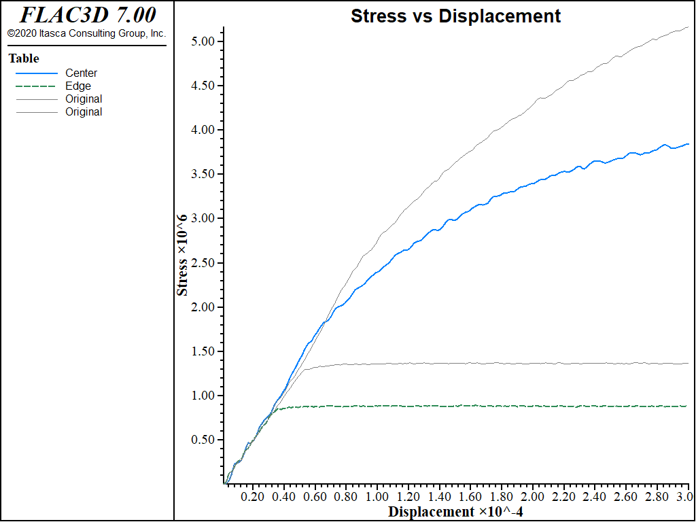

本构模型的选择
必须为模型中的所有网格单元指定本构模型，然后设置所指定模型的性质。这两个步骤构成对模型材料进行表征的工作，需要考虑若干因素。本节考察本构模型的选择和赋值过程。下一节材料性质（Material Properties）讨论性质赋值。
本节列出的所有示例均包含在项目文件“ConstitutiveModels.f3prj”中。
本构模型概述
本节概述 FLAC3D 中的本构模型，并就其适当应用提出建议。本构模型（Constitutive Models）一节提供模型表述的背景信息。
FLAC3D 中内置的力学材料模型[1]包括：
- 空模型（Null）；
- （各向同性）弹性（(Isotropic) elasticity）；
- 正交各向异性弹性（Orthotropic elasticity）；
- 各向异性（横观各向同性）弹性（Anisotropic (transversely isotropic) elasticity）；
- Drucker-Prager 塑性（Drucker-Prager plasticity）；
- Mohr-Coulomb 塑性（Mohr-Coulomb plasticity）；
- 遍布节理塑性（Ubiquitous-joint plasticity）；
- 各向异性弹性遍布节理塑性（Anisotropic-elasticity ubiquitous-joint plasticity）；
- 应变硬化／软化 Mohr-Coulomb 塑性（Strain-hardening/softening Mohr-Coulomb plasticity）；
- 双线性应变硬化／软化遍布节理（SUBI）塑性（Bilinear strain-hardening/softening ubiquitous-joint (SUBI) plasticity）；
- 双屈服塑性（Double-yield plasticity）；
- 修正 Cam-clay 塑性（Modified Cam-clay plasticity）；
- Hoek-Brown 塑性（Hoek-Brown plasticity）；
- Hoek-Brown-PAC 塑性（Hoek-Brown-PAC plasticity）；
- 帽盖屈服（CYSoil）塑性（Cap-Yield (CYSoil) plasticity）；
- 简化帽盖屈服（CHSoil）塑性（Simplified Cap-Yield (CHSoil) plasticity）；
- 塑性硬化（PH）塑性（Plastic-Hardening (PH) plasticity）；
- 膨胀塑性（Swell plasticity）；以及
- Mohr-Coulomb 拉伸裂缝塑性（Mohr-Coulomb Tension Crack plasticity）。
每个模型均用于表示地质材料中常见的一种特定本构行为。空（null）模型用于表示从模型中移除的材料。各向同性弹性（isotropic elasticity）模型适用于表现出线性应力应变行为的均质、各向同性连续材料。正交各向异性弹性（orthotropic elasticity）模型和各向异性（横观各向同性）弹性（anisotropic (transversely isotropic) elasticity）模型适用于具有明确弹性各向异性的弹性材料。Drucker-Prager 塑性（Drucker-Prager plasticity）模型采用简单破坏准则，其剪切屈服应力是各向同性应力的函数。Mohr-Coulomb 塑性（Mohr-Coulomb plasticity）模型用于受到剪切荷载时发生屈服的材料，但屈服应力仅取决于最大和最小主应力；中间主应力不影响屈服。遍布节理塑性（ubiquitous-joint plasticity）模型对应于因内嵌弱面而表现出明确强度各向异性的 Mohr-Coulomb 材料。各向异性弹性遍布节理塑性（Anisotropic-elasticity ubiquitous-joint plasticity）模型在遍布节理塑性模型基础上考虑了各向异性弹性。应变硬化／软化 Mohr-Coulomb 塑性（strain-hardening/softening Mohr-Coulomb plasticity）模型以 Mohr-Coulomb 模型为基础，适用于加载超过初始破坏极限后剪切强度增加或降低的材料。SUBI 塑性（SUBI plasticity）模型是遍布节理模型的推广，允许基质和节理的强度性质硬化或软化。双屈服塑性（double-yield plasticity）模型是应变软化模型的扩展，可同时模拟不可逆压密和剪切屈服。修正 Cam-clay 塑性（modified Cam-clay plasticity）模型考虑体积变化对变形能力和抗破坏能力的影响。Hoek-Brown 塑性（Hoek-Brown plasticity）模型是一种经验关系，以非线性破坏面表示各向同性完整岩石和岩体的强度极限。其非线性破坏面在当前最小主应力水平下，以 Mohr-Coulomb 切线连续近似。它可用于计算安全系数。Hoek-Brown-PAC 塑性（Hoek-Brown-PAC plasticity）模型基于传统 Hoek-Brown 非线性破坏面，但还包括随围压水平变化的塑性流动法则。CYSoil 塑性（CYSoil plasticity）模型同时考虑摩擦硬化和体积硬化，全面表示土体的非线性行为。CHSoil 塑性（CHSoil plasticity）模型是忽略体积硬化后的 CYSoil 塑性模型简化版。塑性硬化塑性（Plastic-Hardening plasticity）模型是一种剪切和体积硬化本构模型，利用破坏前的曲线应力应变关系模拟土体行为。可通过常规实验室试验或原位试验直接标定该模型。它已成熟应用于土与结构相互作用、开挖、隧道和沉降分析等诸多领域。膨胀塑性（Swell plasticity）模型基于 Mohr-Coulomb 模型，采用非关联剪切流动法则和关联拉伸流动法则。区别在于，通过将湿润应变与湿润前的模型状态耦合，考虑湿润引起的变形。Mohr-Coulomb 拉伸裂缝塑性（Mohr-Coulomb Tension Crack plasticity）模型是 Mohr-Coulomb 本构模型的扩展，将拉伸塑性应变视为可逆，并在裂缝闭合前防止产生垂直裂缝的法向压应力。
FLAC3D 中的材料模型主要用于岩土工程相关应用（例如地下施工、采矿、边坡稳定性、基础、土坝和堆石坝）。为具体工程分析选择本构模型时，应牢记以下两点：
- 对所模拟材料已知哪些特征？
- 模型分析的预期用途是什么？
下表汇总了 FLAC3D 模型，并列出代表性材料及可能应用的示例。Mohr-Coulomb 模型最适用于一般工程研究。此外，对于岩土工程材料，黏聚力和摩擦角这两项 Mohr-Coulomb 参数通常比其他性质更容易获取。遍布节理、应变软化、双线性应变软化／遍布节理和双屈服塑性模型，实际上都是 Mohr-Coulomb 模型的变体。如果将附加材料参数设为较大值，这些模型会产生与 Mohr-Coulomb 模型相同的结果。Drucker-Prager 模型的破坏准则比 Mohr-Coulomb 更简单，但通常不适合表示地质材料的破坏。提供该模型主要是为了将 FLAC3D 与具有 Drucker-Prager 模型但没有 Mohr-Coulomb 模型的其他数值程序比较。请注意，摩擦为零时，Mohr-Coulomb 模型退化为 Tresca 模型，而 Drucker-Prager 模型退化为 von Mises 模型。
Drucker-Prager 和莫尔—库仑模型是计算效率最高的塑性模型；其他塑性模型需要更多内存和计算时间。例如，莫尔—库仑模型（Mohr-Coulomb model）不直接计算塑性应变。如果需要塑性应变，必须采用应变软化、双线性遍布节理或双屈服模型。这三种模型主要用于破坏后响应十分重要的情况，例如屈服矿柱、崩落或回填研究。
FLAC3D 中的本构模型
| 模型 | 代表性材料 | 应用示例 |
|---|---|---|
| null | 空洞 | 孔洞、开挖、将在后续阶段添加材料的区域 |
| 弹性 | 均质、各向同性连续介质；线性应力—应变行为 | 低于强度极限加载的人工制造材料（例如钢材）；安全系数计算 |
| 正交各向异性弹性 | 具有三个相互垂直弹性对称面的材料 | 低于强度极限加载的柱状玄武岩 |
| 横观各向同性弹性 | 具有弹性各向异性的薄层状材料，例如板岩 | 低于强度极限加载的层状材料 |
| Drucker-Prager | 应用范围有限；低摩擦软黏土 | 用于与隐式有限元程序比较的常用模型 |
| Mohr-Coulomb | 松散和胶结颗粒材料；土、岩石、混凝土 | 一般土力学或岩石力学，例如边坡稳定和地下开挖 |
| 应变硬化／软化 Mohr-Coulomb | 表现非线性材料硬化或软化的颗粒材料 | 破坏后行为研究，例如渐进坍塌、屈服矿柱、崩落 |
| 遍布节理 | 具有强度各向异性的薄层状材料，例如板岩 | 密集层状地层中的开挖 |
| 各向异性弹性遍布节理 | 具有刚度和强度各向异性的薄层状材料，例如板岩 | 密集层状地层中的开挖 |
| 双线性应变硬化／软化遍布节理 | 表现非线性材料硬化或软化的层状材料 | 层状材料的破坏后行为研究 |
| 双屈服模型 | 压力引起永久体积减小的弱胶结颗粒材料 | 水力充填材料 |
| 修正 Cam-clay | 黏土 | 黏土上的岩土工程施工 |
| Hoek-Brown | 各向同性岩石材料 | 岩石中的岩土工程施工；安全系数计算 |
| Hoek-Brown-PAC | 各向同性岩石材料 | 岩石中的岩土工程施工 |
| CYSoil 和 CHSoil | 土体 | 开挖、隧道、边坡稳定性、路堤和基础分析 |
| 塑性硬化 | 土体 | 开挖、隧道、边坡稳定性、路堤和基础分析 |
| 膨胀 | 因湿润而发生变形的土体 | 用于湿润变形显著的土体 |
| Mohr-Coulomb-Tension | 岩石和土 | 拉底区上覆岩层的动力响应或变形 |
Drucker-Prager、Mohr-Coulomb、遍布节理、各向异性弹性遍布节理、应变软化、双线性应变软化／遍布节理、双屈服和膨胀模型采用相同的拉伸破坏准则。该准则将抗拉强度与抗剪强度分别定义，并对拉伸破坏的开始采用关联流动法则。对于 Drucker-Prager、Mohr-Coulomb 和遍布节理模型，发生拉伸破坏时，赋予的抗拉强度默认保持不变；但可通过 flag-brittle 性质，在拉伸破坏后将抗拉限值降为 0。可以使用应变软化、双线性应变软化遍布节理和双屈服模型模拟拉伸软化。（见破坏后性质（Post-Failure Properties）主题。）请注意，程序不记录拉伸破坏和拉伸应变后可能张开的假想空隙；如果应变率转为压缩，所有模型都会立即开始承受压缩荷载——只有 Mohr-Coulomb-Tension 模型例外，它专门通过相应表述克服了这一问题。
双屈服模型和修正剑桥黏土模型都考虑体积变化对材料变形性及破坏特征的影响。两者的切线体积模量和剪切模量均为塑性体积变形的函数。双屈服模型最初为表示预固结压力较低的矿山回填材料行为而开发。修正剑桥黏土模型更适合软黏土等土体，此时预固结压力可显著影响材料行为。两种模型的比较总结见此处（here）。
Hoek-Brown 模型在当前小主压应力水平处，采用莫尔—库仑切线近似非线性破坏面，从而保留传统莫尔—库仑模型的全部优点，例如可用于安全系数计算。Hoek-Brown-PAC 模型将广义 Hoek-Brown 准则与随围压水平变化的塑性流动法则结合。低围压下，屈服时体积膨胀较大，与轴向劈裂和楔入效应有关；高围压下，材料趋近于无剪胀状态。
CYSoil 和 PH 模型都考虑摩擦硬化和体积硬化、曲线形式的破坏前行为，以及与加载刚度不同的卸载刚度，因此适用于破坏前变形和／或开挖引起的变形很重要的岩土工程应用，例如内支撑／锚固开挖挡墙设计和隧道施工。PH 模型和 CYSoil 模型的比较汇总于此处（here）。
选择合适的模型
问题分析应始终从最简单的材料模型开始；大多数情况下，应先采用弹性模型。该模型运行最快，仅需两个材料参数：体积模量和剪切模量（见材料性质（Material Properties））。它可直观反映 FLAC3D 网格中的应力变形行为，并确定可能产生应力集中的位置。这有助于确定网格划分密度。
使用所选材料模型求解完整边值问题之前，先进行简单试验通常很有帮助。这样可以将模型预期响应与实际材料的已知响应比较，加深认识。
下例说明简单试验模型的用法。应用问题是屈服矿柱分析。创建简单模型，评估莫尔—库仑模型与应变软化模型实现结果的差异。该试验还说明所选测量位置对报告结果的影响。模型对由莫尔—库仑材料组成的圆柱形网格进行压缩试验。
莫尔—库仑材料压缩试验
model new
model large-strain off
; 创建网格单元
zone create cylinder point 0 (0,0,0) point 1 (1,0,0) ...
point 2 (0,2,0) point 3 (0,0,1) size 4 5 4
zone reflect normal (1,0,0)
zone reflect normal (0,0,1)
; 本构模型和参数
zone cmodel assign mohr-coulomb
zone property bulk 1.19e10 shear 1.1e10
zone property cohesion 2.72e5 friction 44 tension 2e5
; 边界条件
zone face apply velocity (0, 1e-7,0) range position-y 0
zone face apply velocity (0,-1e-7,0) range position-y 2
; 历史
zone history displacement-y position (0,0,0)
zone history stress-yy position (0,1,0)
zone history stress-yy position (1,1,0)
model step 3000
model save 'Compression'
监测网格中心和外边界处的轴向（\(y\) 方向）应力位移响应。结果如下图所示。


图 1：莫尔—库仑材料压缩的应力—位移曲线。显示内部位置（上曲线）和边界位置（下曲线）的响应。
现在采用应变软化模型重复试验。
应变软化材料压缩试验
model new
model large-strain off
; 创建网格单元
zone create cylinder point 0 (0,0,0) point 1 (1,0,0) ...
point 2 (0,2,0) point 3 (0,0,1) size 4 5 4
zone reflect normal (1,0,0)
zone reflect normal (0,0,1)
; 本构模型和参数
zone cmodel assign strain-softening
zone property bulk 1.19e10 shear 1.1e10
zone property cohesion 2.72e5 friction 44 tension 2e5
zone property table-cohesion 'coh' table-friction 'fri'
table 'coh' add (0,2.72e5) (1e-4,2e5) (2e-4,1.5e5) (3e-4,1.03e5) (1,1.03e5)
table 'fri' add (0,44) (1e-4,42) (2e-4,40) (3e-4,38) (1,38)
; 边界条件
zone face apply velocity (0, 1e-7,0) range position-y 0
zone face apply velocity (0,-1e-7,0) range position-y 2
; 历史
zone history displacement-y position (0,0,0)
zone history stress-yy position (0,1,0)
zone history stress-yy position (1,1,0)
model step 3000
model save 'Softening'
再次监测水平应力—位移响应，如下图所示。本试验产生明显的峰值和残余破坏应力水平。


图 2：应变软化材料压缩试验的应力—位移关系（监测位置与上图类似）。
应变软化模型同时考虑脆性软化（黏聚力降低引起）和渐进软化（摩擦角降低引起）。属性选择的进一步讨论见材料属性（Material Properties）。
比较上述两图，可以看出两种模型的不同响应。开始破坏之前的初始响应相同，但破坏后行为明显不同。显然，使用应变软化模型需要更多数据，而且通常必须针对每个具体问题标定软化模型。
这些图还展示围压对“测量”响应的影响。网格中部记录的历史表明，模型中心产生的应力水平高于自由侧面。监测点位置应尽量与实际问题中测量位置一致。
水的影响
当地质材料的孔隙中含有承压孔隙流体时，材料通常显得更弱。FLAC3D 通过引入考虑网格单元中孔隙压力的有效应力来表示这一现象。FLAC3D 中孔隙压力受压取正。因此，有效应力 \(\sigma^{\prime}\) 与总应力 \(σ\) 及孔隙压力 \(p\) 的关系为
所有塑性模型均采用有效应力。
重复前一主题的应变软化示例（strain-softening example），但在网格单元中施加恒定孔隙压力，即不排水压缩试验，可看出水的影响。在步进之前向示例添加命令
zone face apply velocity (0,-1e-7,0) range position-y 2
; 初始条件
。下图显示较低的强度。


图 3：恒定孔隙压力下莫尔—库仑材料压缩试验的应力—位移曲线。
本构模型的实现方式
FLAC3D 中可以采用多种不同方式实现本构模型。标准方式是用 指定网格单元本构模型（zone cmodel assign） 命令调用某个内置模型。编写新本构模型（Writing New Constitutive Models）中介绍的用户自定义模型也通过 指定网格单元本构模型（zone cmodel assign） 命令调用。
内置模型的源代码包含在“\pluginfiles\cmodels”子目录中，并且在程序首次启动时，也会复制到用户提供的应用程序数据位置。希望编写和实现自己模型的用户，应将这些文件作为示例加以研究。用户自定义模型使用 C++ 编写，并实现为 DLL，与内置模型一样随 FLAC3D 可执行文件加载。[2]（见编写新本构模型（Writing New Constitutive Models）。）
通常希望修改已有本构模型，无论是内置模型还是用户自定义模型，使材料属性依赖其他模型参数。有三种实现方式：
- 通过 FISH 函数修改内置模型属性，该函数扫描全部网格单元，并按指定步数间隔调用，例如每十步一次；[3]
- 在用户自定义本构模型函数中，每一步按照公式修改属性；或
- 通过查找表（使用table 命令（table commands））修改属性，对于内置应变软化和双屈服模型，将强度属性设为塑性应变的函数。
第三种方法是在 FLAC3D 模型中改变性质的最高效方式。第一种方法效率最低。
尾注
| [1] | 用户可以按照编写新本构模型（Writing New Constitutive Models）所述流程，以 DLL 形式创建自己的本构模型。此外，还提供九种可选模型，用于模拟与时间相关的黏弹性和黏塑性行为（蠕变）（见蠕变本构模型说明（Description of Creep Constitutive Models）），以及两种用于模拟动力孔隙压力产生的可选模型（见动力分析（Dynamic Analysis））。 |
| [2] | 注意，这种方法与二维 FLAC 采用的 FISH 本构模型不同。采用 DLL 方式时，用户自定义模型的计算速度与内置模型相同。 |
| [3] | 请注意，增大刚度性质后需要进行一次总体更新以保持稳定。zone.do.update 函数将强制在下一循环开始时进行总体更新。 |
| 这些内容对您有帮助吗？… 版权与免责声明 | FLAC3D © 2019, Itasca | 原文更新于 2020 年 10 月 8 日 |